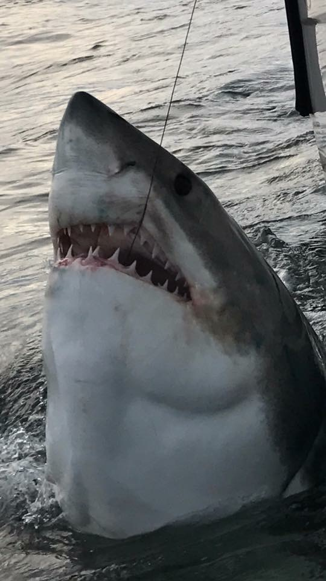
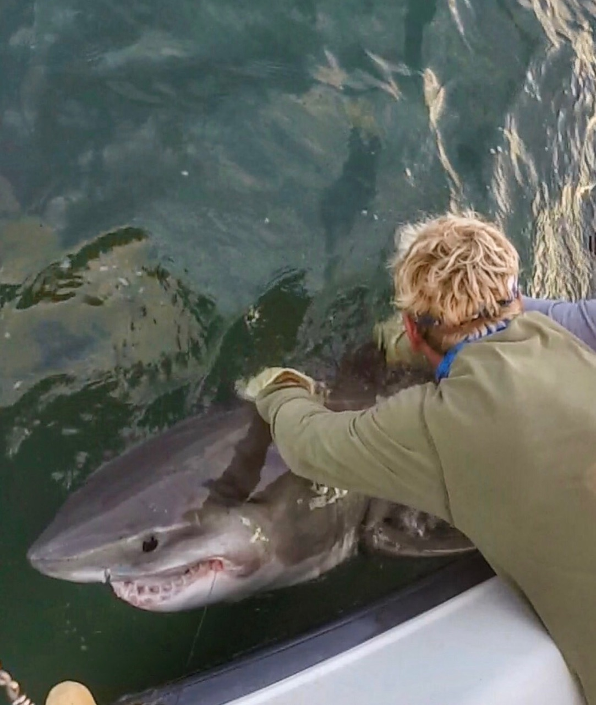
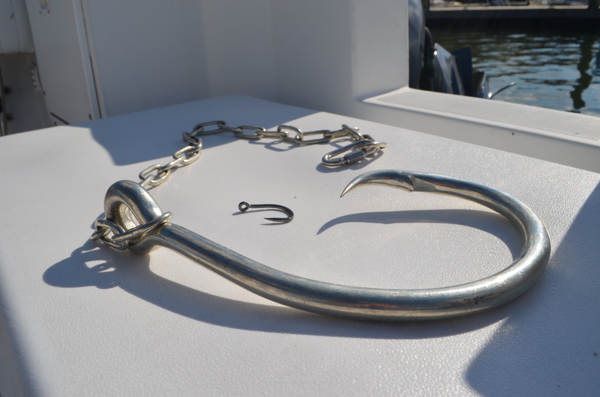

Chip Michalove runs Outcast Sport Fishing, a charter fishing comapny out of Hilton Head Island, South Carolina. After he began catching great white sharks in the area, he connected with scientists at the Atlantic White Shark Conservancy to tag and get DNA samples for their research. Michalove does all of his expeditions for great white sharks on his own dime.
Michalove spotted his first great white shark off the coast of South Carolina in late January. While tracking great white sharks in the US Atlantic is still realatively new, Chip estimates that they come to the Carolinas in early December and stay until the middle of March. He has not been able to tag one past March yet.
Great white sharks differ from most with their ability to regulate their body temperature. While most sharks are ectothermic, great white sharks are endothermic and can elevate their body temperature above the average water temperature that surrounds them.
While their unique ability to regulate body temperature allows them to hunt effectively in cool waters, they tend to stay in temperate waters, between 50 °F and 69.8 °F. As the temperature of the water cools off the coast in the Northeastern United States, the sharks migrate South into the Carolinas, Georgia and Florida.
According to the Atlantic White Shark Conservancy, great white sharks can weigh up to 4,000 pounds and can be as long as 20 feet.
As with most animals, their diet changes with age. As the sharks mature, they tend to stop feeding on fish to more "active prey." While in the Northeastern Atlantic, the active prey is likely seals, Michalove guesses that in the South they are feeding on the migrating right whales, dolphins, sea turtles and maybe even manatee. During one tagging expedition, a shark that Michalove was tagging threw up beside the boat. "It was not like anything I had ever smelled before," said Michalove. He guessed that it was a dolphin or perhaps a seal, but it was "definitely not another fish."
They are considered to be "selective and efficient predators" by the Atlantic White Shark Conservancy. Great white sharks tend to eat animals and fish large enough to satisfy their appetite.
Fishermen like Michalove and organizations like the Atlantic White Shark Conservancy aim to keep sharks safe. They do so by gaining as much information as possible throughout the year so that if this species were to become endangered they would know what to do to save them.
Another major priority is education. Public support for wildlife protection is crucial to keeping this species cared for. Great white sharks are already on the "vulnerable" list as shark numbers decrease annually and these advocates are fighting to keep them safe.
When Michalove first started catching great white sharks, he got in touch with OCEARCH, a research and data organization that also tags great white sharks as well as some other large species. They gained popularity in South Carolina with the tagging of "Mary Lee" a shark that can frequently be seen of the coast of South Carolina on the OCEARH online tracker.
While the goals of OCEARCH seem to align with that of Michalove, he has noticed some issues in their tagging practices. Michalove is able to catch, tag and release great white sharks off the side of his 27-foot boat with a three man crew. OCEARCH has a large team and pull each shark out of the water to tag them. They also use a hook that is exponentially larger than what Michalove uses.
Michalove argued that OCEARCH is doing good work but needs to update their practices to leave the sharks in the water and use smaller hook sizes to minimize the trauma for the sharks so they can gain the best information about them.